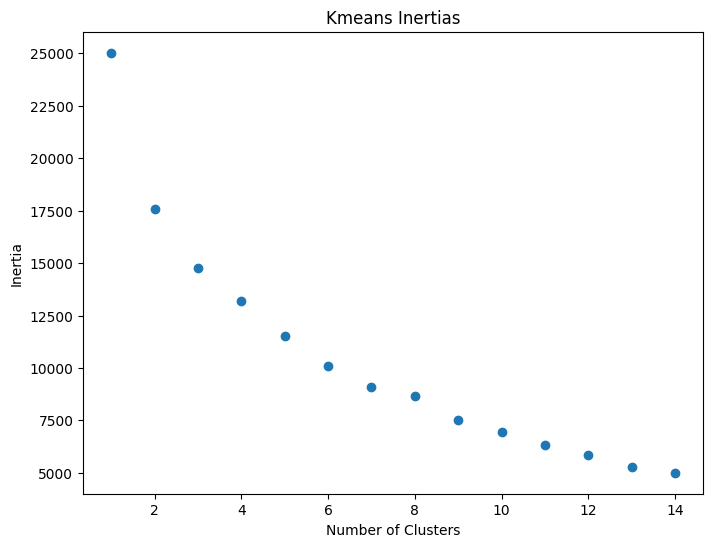
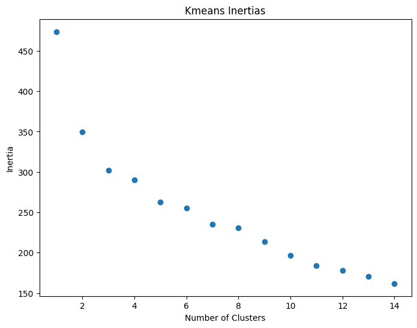
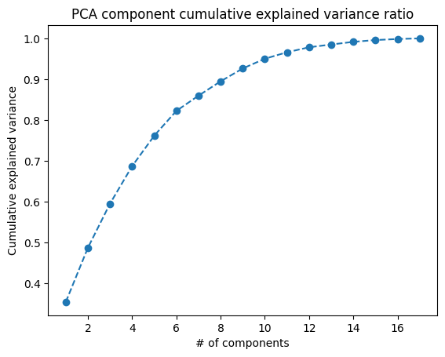

# import needed packages
from functions import *
# read in data
data = pd.read_csv("data_honorifics.csv")
# random seed for clustering
randomSeed = 5Honorifics Data Analysis
Part One: Clustering Based on Mapped Values
For the first try at clustering the honorifics data, I created a vocab list and mapped each answer to a number. Then clustered the dataset from there. The benefits of this approach are that it’s easy to implement and easy to use for clustering. The drawbacks are that using Kmeans to cluster will probably result in slightly skewed clustering since numbers that are closer to each other will be treated as more similar (which is not necessarily true since the numbers have very little meaning in this context). This issue will be addressed in the second section.
# isolate the question portion of the dataset
questions = data.iloc[:,7:24]
questions = questions.fillna("I don't know")
vocab = []
qcols = []
# get questions column names
for question in range(1,18):
qcols.append("Q"+str(question))
# get total unique responses in survey
stackedDf = questions.stack()
vocab = stackedDf.unique()Below is the dictionary created to map string values to numbers. A sample is printed out.
# make a dict to map words to numbers
dict = {}
for val in range(len(vocab)):
dict[vocab[val]]=val
for i,key in enumerate(dict.keys()):
print(key+":"+str(dict[key]))
if i==5:
breakGrandma:0
stone:1
Teacher:2
Teacup:3
Thought:4
Cat:5Next we take the dictionary and use it to create a dataframe where the string values are mapped to numbers. This dataframe is what we will use to create clusters.
# map the dataframe vals to nums
df = pd.DataFrame()
for q in qcols:
df[q] = questions[q].map(dict)
# fill nas with idks
df = df.fillna(dict["I don\'t know"])
df| Q1 | Q2 | Q3 | Q4 | Q5 | Q6 | Q7 | Q8 | Q9 | Q10 | Q11 | Q12 | Q13 | Q14 | Q15 | Q16 | Q17 | |
|---|---|---|---|---|---|---|---|---|---|---|---|---|---|---|---|---|---|
| 0 | 0 | 1 | 2 | 3 | 1 | 2 | 4 | 3 | 5 | 5 | 6 | 7 | 8 | 9 | 10 | 11 | 12 |
| 1 | 4 | 1 | 2 | 3 | 1 | 2 | 4 | 3 | 5 | 5 | 13 | 14 | 8 | 9 | 15 | 11 | 12 |
| 2 | 0 | 13 | 2 | 13 | 16 | 2 | 13 | 17 | 9 | 13 | 8 | 13 | 8 | 9 | 13 | 18 | 13 |
| 3 | 0 | 1 | 2 | 3 | 1 | 2 | 15 | 3 | 5 | 15 | 8 | 19 | 8 | 20 | 15 | 18 | 9 |
| 4 | 0 | 1 | 2 | 3 | 1 | 2 | 4 | 3 | 5 | 5 | 6 | 7 | 8 | 9 | 21 | 11 | 12 |
| ... | ... | ... | ... | ... | ... | ... | ... | ... | ... | ... | ... | ... | ... | ... | ... | ... | ... |
| 62 | 0 | 13 | 2 | 13 | 13 | 2 | 32 | 13 | 13 | 13 | 13 | 13 | 8 | 9 | 15 | 11 | 13 |
| 63 | 0 | 1 | 2 | 3 | 1 | 2 | 32 | 3 | 5 | 5 | 8 | 19 | 8 | 15 | 15 | 15 | 15 |
| 64 | 0 | 1 | 2 | 3 | 1 | 2 | 4 | 3 | 5 | 5 | 6 | 7 | 8 | 22 | 10 | 15 | 12 |
| 65 | 0 | 1 | 2 | 3 | 1 | 2 | 32 | 3 | 9 | 5 | 8 | 19 | 8 | 20 | 15 | 15 | 15 |
| 66 | 4 | 1 | 2 | 3 | 1 | 2 | 4 | 3 | 5 | 5 | 8 | 7 | 8 | 22 | 10 | 11 | 12 |
67 rows × 17 columns
Now that we have our new dataframe, we can perform clustering (using Kmeans). We begin by looking at the inertias of different kmeans cluster numbers to determine an appropriate number of clusters for our data. As you can see from the below graph, there is no clear elbow. Further analysis will all be performed on sets of 6 clusters.
# graph cluster inertias for 1-15 clusters
clusterDf = doKmeans(df,range(1,15),randomSeed=randomSeed)
Age Across Clusters
Now that we have clusters to work with, we can see if there are any age differences between clusters of responses. As you can tell, there are some age differences between clusters, but when we run statistical analyses the age differences are shown to not be significant.
# add age to the cluster df
clusterDf["Age"]=data["Age"]
# print the cluster sets for 6 clusters
rows6 = printClusterSetAge(clusterDf,6)
print(f_oneway(*rows6,nan_policy="omit"))Cluster 0
mean: 28.0
Cluster 1
mean: 34.5
Cluster 2
mean: 24.263157894736842
Cluster 3
mean: 25.75
Cluster 4
mean: 30.166666666666668
Cluster 5
mean: 19.666666666666668
F_onewayResult(statistic=1.2274814354764665, pvalue=0.30991000999963997)To further confirm these results, we do the same analysis on 2, 4, and 8 clusters of the data.
print("Two Clusters: ")
rows2 = printClusterSetAge(clusterDf,2)
print("--------------------------------\nFour Clusters: ")
rows4 = printClusterSetAge(clusterDf,4)
print("--------------------------------\nEight Clusters: ")
rows8 = printClusterSetAge(clusterDf,8)Two Clusters:
Cluster 0
mean: 26.372093023255815
Cluster 1
mean: 29.5
--------------------------------
Four Clusters:
Cluster 0
mean: 26.5625
Cluster 1
mean: 34.5
Cluster 2
mean: 26.25925925925926
Cluster 3
mean: 25.75
--------------------------------
Eight Clusters:
Cluster 0
mean: 28.875
Cluster 1
mean: 36.57142857142857
Cluster 2
mean: 25.782608695652176
Cluster 3
mean: 23.0
Cluster 4
mean: 29.714285714285715
Cluster 5
mean: 21.5
Cluster 6
mean: 22.333333333333332
Cluster 7
mean: 19.666666666666668
Below is the statistical analyses of the age for 2, 4, and 8 clusters. None of them are statistically significant.
# ttest on clusters ages
# no significant
print(ttest_ind(list(rows2[0]),list(rows2[1]),nan_policy="omit"))
print(f_oneway(*rows4,nan_policy="omit"))
print(f_oneway(*rows8,nan_policy="omit"))TtestResult(statistic=-0.8899559262088101, pvalue=0.3773658821898026, df=55.0)
F_onewayResult(statistic=0.937386376494588, pvalue=0.42918935134444425)
F_onewayResult(statistic=1.2762466067371379, pvalue=0.28162824838667305)Part Two: Clustering Based on One Hot Encoding
In order to address the concerns from the mapping (where numbers that are close by will be clustered closer), we will then map the data using one-hot-encoding principals. Each question will be split into several columns with a column for each possible response, and the columns will simply contain binary data. The idea is that since the questions are now represented with binary data, all the numbers are equally distant from one another. We will repeat the same clustering process with the one-hot-encoded data.
encoded = pd.DataFrame()
for col in questions.columns:
for val in questions[col].unique():
encoded[col+"-"+val]=(questions[col]==val).map({True: 1, False: 0})
encoded| Q1-Grandma | Q1-Thought | Q1-I don't know | Q2-stone | Q2-I don't know | Q2-Listener | Q3-Teacher | Q3-I don't know | Q4-Teacup | Q4-I don't know | ... | Q16-Murderer | Q16-Mother | Q16-Other | Q16-Listener | Q16-I don't know | Q17-Car | Q17-I don't know | Q17-Father | Q17-Listener | Q17-B | |
|---|---|---|---|---|---|---|---|---|---|---|---|---|---|---|---|---|---|---|---|---|---|
| 0 | 1 | 0 | 0 | 1 | 0 | 0 | 1 | 0 | 1 | 0 | ... | 1 | 0 | 0 | 0 | 0 | 1 | 0 | 0 | 0 | 0 |
| 1 | 0 | 1 | 0 | 1 | 0 | 0 | 1 | 0 | 1 | 0 | ... | 1 | 0 | 0 | 0 | 0 | 1 | 0 | 0 | 0 | 0 |
| 2 | 1 | 0 | 0 | 0 | 1 | 0 | 1 | 0 | 0 | 1 | ... | 0 | 1 | 0 | 0 | 0 | 0 | 1 | 0 | 0 | 0 |
| 3 | 1 | 0 | 0 | 1 | 0 | 0 | 1 | 0 | 1 | 0 | ... | 0 | 1 | 0 | 0 | 0 | 0 | 0 | 1 | 0 | 0 |
| 4 | 1 | 0 | 0 | 1 | 0 | 0 | 1 | 0 | 1 | 0 | ... | 1 | 0 | 0 | 0 | 0 | 1 | 0 | 0 | 0 | 0 |
| ... | ... | ... | ... | ... | ... | ... | ... | ... | ... | ... | ... | ... | ... | ... | ... | ... | ... | ... | ... | ... | ... |
| 62 | 1 | 0 | 0 | 0 | 1 | 0 | 1 | 0 | 0 | 1 | ... | 1 | 0 | 0 | 0 | 0 | 0 | 1 | 0 | 0 | 0 |
| 63 | 1 | 0 | 0 | 1 | 0 | 0 | 1 | 0 | 1 | 0 | ... | 0 | 0 | 0 | 1 | 0 | 0 | 0 | 0 | 1 | 0 |
| 64 | 1 | 0 | 0 | 1 | 0 | 0 | 1 | 0 | 1 | 0 | ... | 0 | 0 | 0 | 1 | 0 | 1 | 0 | 0 | 0 | 0 |
| 65 | 1 | 0 | 0 | 1 | 0 | 0 | 1 | 0 | 1 | 0 | ... | 0 | 0 | 0 | 1 | 0 | 0 | 0 | 0 | 1 | 0 |
| 66 | 0 | 1 | 0 | 1 | 0 | 0 | 1 | 0 | 1 | 0 | ... | 1 | 0 | 0 | 0 | 0 | 1 | 0 | 0 | 0 | 0 |
67 rows × 68 columns
Once again we then perform Kmeans for a number of cluster values, and graph the inertias.
# graph cluster inertias for 1-15 clusters
encodedClusters = doKmeans(encoded,range(1,15),randomSeed=randomSeed)
Now we can once again look at some of the cluster sets and see if there are any significant age differences. Below we look at 3, 5, and 9 clusters, and none of the age differences are significant.
# add age to the cluster df
encodedClusters["Age"]=data["Age"]
# print the cluster sets for 6 clusters
print("Three Clusters: ")
rows3 = printClusterSetAge(encodedClusters,3)
print("--------------------------------\nFive Clusters: ")
rows5 = printClusterSetAge(encodedClusters,5)
print("--------------------------------\nNine Clusters: ")
rows9 = printClusterSetAge(encodedClusters,9)
# test significance of age diffs
print(f_oneway(*rows3,nan_policy="omit"))
print(f_oneway(*rows5,nan_policy="omit"))
print(f_oneway(*rows9,nan_policy="omit"))Three Clusters:
Cluster 0
mean: 27.866666666666667
Cluster 1
mean: 26.37142857142857
Cluster 2
mean: 29.428571428571427
--------------------------------
Five Clusters:
Cluster 0
mean: 30.666666666666668
Cluster 1
mean: 26.529411764705884
Cluster 2
mean: 30.333333333333332
Cluster 3
mean: 25.5
Cluster 4
mean: 24.0
--------------------------------
Nine Clusters:
Cluster 0
mean: 19.0
Cluster 1
mean: 24.476190476190474
Cluster 2
mean: 37.0
Cluster 3
mean: 27.714285714285715
Cluster 4
mean: 29.846153846153847
Cluster 5
mean: 22.0
Cluster 6
mean: 25.0
Cluster 7
mean: 31.166666666666668
Cluster 8
mean: 24.0
F_onewayResult(statistic=0.24425602643843397, pvalue=0.7841477565782357)
F_onewayResult(statistic=0.33947594280809074, pvalue=0.8500898271491188)
F_onewayResult(statistic=0.805665322752361, pvalue=0.6007790909458117)Importance of each Question in Explaining Variance
In an effort to find out which questions were most used in clustering responses, we performed PCA on the data and looked at the explained_variance_ratio
df2 = df.drop('Age',axis=1)
pca = PCA()
pca.fit(df2)
x = pca.explained_variance_ratio_
# plotting the explained variance of each number of components
# saves the plot to html_files
plt.plot(range(1,18),pca.explained_variance_ratio_.cumsum(),marker='o',linestyle='--')
plt.title("PCA component cumulative explained variance ratio")
plt.xlabel("# of components")
plt.ylabel("Cumulative explained variance")
plt.savefig("../html_files/explainedVariance.png")
plt.show()
To determine which questions are most impactful, we can look at the components of the pca test. The below dataframe contains the information. The columns are the questions and each row represents a division of the participant responses into that many parts (row one keeps the data whole, row 2 divides the data into 2 parts, and so on). Higher numbers mean more impact on the division.
componentImportance = pd.DataFrame(pca.components_,columns=questions.drop('Age',axis=1).columns).abs()
componentImportance.index += 1
componentImportance| Q1 | Q2 | Q3 | Q4 | Q5 | Q6 | Q7 | Q8 | Q9 | Q10 | Q11 | Q12 | Q13 | Q14 | Q15 | Q16 | Q17 | |
|---|---|---|---|---|---|---|---|---|---|---|---|---|---|---|---|---|---|
| 1 | 0.065261 | 0.251104 | 0.023802 | 0.235609 | 0.501119 | 0.089672 | 0.381117 | 0.439146 | 0.152758 | 0.234916 | 0.107855 | 0.286691 | 0.049657 | 0.223147 | 0.184399 | 0.142972 | 0.017312 |
| 2 | 0.034498 | 0.034282 | 0.008624 | 0.027916 | 0.376160 | 0.065253 | 0.672585 | 0.336405 | 0.022740 | 0.002778 | 0.010007 | 0.341557 | 0.024030 | 0.241424 | 0.300875 | 0.008091 | 0.136923 |
| 3 | 0.017298 | 0.162432 | 0.013355 | 0.176231 | 0.083258 | 0.043949 | 0.212373 | 0.100657 | 0.050326 | 0.118706 | 0.497335 | 0.102624 | 0.190375 | 0.540256 | 0.493382 | 0.176271 | 0.029491 |
| 4 | 0.107294 | 0.177194 | 0.053273 | 0.131784 | 0.114861 | 0.046062 | 0.369638 | 0.016921 | 0.022529 | 0.063464 | 0.465577 | 0.739914 | 0.059523 | 0.041608 | 0.051508 | 0.045428 | 0.076758 |
| 5 | 0.151197 | 0.154113 | 0.075536 | 0.159133 | 0.030143 | 0.066753 | 0.385226 | 0.053496 | 0.078174 | 0.115552 | 0.446973 | 0.164288 | 0.163233 | 0.617430 | 0.293056 | 0.156540 | 0.035276 |
| 6 | 0.071561 | 0.243183 | 0.044679 | 0.200587 | 0.016023 | 0.113983 | 0.098938 | 0.093568 | 0.015567 | 0.097087 | 0.482601 | 0.346636 | 0.201084 | 0.103533 | 0.643739 | 0.176187 | 0.048914 |
| 7 | 0.132750 | 0.073289 | 0.062504 | 0.018598 | 0.158359 | 0.198153 | 0.052940 | 0.101245 | 0.019877 | 0.122275 | 0.227548 | 0.026759 | 0.779822 | 0.335693 | 0.222684 | 0.227808 | 0.072261 |
| 8 | 0.065623 | 0.535107 | 0.033691 | 0.392041 | 0.131747 | 0.418975 | 0.156695 | 0.212725 | 0.063015 | 0.238469 | 0.064382 | 0.199240 | 0.030775 | 0.227396 | 0.217592 | 0.010154 | 0.295018 |
| 9 | 0.167556 | 0.153362 | 0.106363 | 0.119538 | 0.278873 | 0.418319 | 0.121631 | 0.177975 | 0.125248 | 0.636194 | 0.117082 | 0.001891 | 0.383401 | 0.111336 | 0.104572 | 0.099849 | 0.095570 |
| 10 | 0.397828 | 0.074563 | 0.220901 | 0.008614 | 0.187006 | 0.271550 | 0.119426 | 0.053219 | 0.022225 | 0.232402 | 0.007513 | 0.041512 | 0.191130 | 0.102171 | 0.054958 | 0.731053 | 0.144166 |
| 11 | 0.091008 | 0.120108 | 0.086236 | 0.148443 | 0.022125 | 0.044426 | 0.042613 | 0.237062 | 0.156759 | 0.128066 | 0.031041 | 0.174227 | 0.003407 | 0.099919 | 0.038021 | 0.046854 | 0.895217 |
| 12 | 0.236501 | 0.083503 | 0.175955 | 0.065746 | 0.108361 | 0.466332 | 0.047012 | 0.103983 | 0.119214 | 0.562783 | 0.075347 | 0.032176 | 0.276599 | 0.007225 | 0.000996 | 0.481516 | 0.116251 |
| 13 | 0.065969 | 0.079904 | 0.050287 | 0.015687 | 0.580763 | 0.120766 | 0.000153 | 0.615809 | 0.449237 | 0.035272 | 0.012067 | 0.075993 | 0.071665 | 0.047784 | 0.067974 | 0.173856 | 0.064448 |
| 14 | 0.735312 | 0.327546 | 0.168556 | 0.003407 | 0.061300 | 0.468468 | 0.028652 | 0.077646 | 0.019193 | 0.152560 | 0.113667 | 0.014410 | 0.123126 | 0.062373 | 0.091162 | 0.170951 | 0.013459 |
| 15 | 0.108782 | 0.045630 | 0.057336 | 0.242140 | 0.274132 | 0.103231 | 0.028039 | 0.340884 | 0.824847 | 0.003779 | 0.028799 | 0.120467 | 0.014297 | 0.050371 | 0.061665 | 0.008789 | 0.137921 |
| 16 | 0.178783 | 0.578241 | 0.153999 | 0.742795 | 0.021003 | 0.122289 | 0.014037 | 0.092699 | 0.100559 | 0.104948 | 0.010608 | 0.044324 | 0.021800 | 0.016238 | 0.006439 | 0.019416 | 0.098324 |
| 17 | 0.305679 | 0.052882 | 0.909477 | 0.155977 | 0.045307 | 0.153519 | 0.014628 | 0.069872 | 0.121472 | 0.068292 | 0.033739 | 0.002613 | 0.001068 | 0.011369 | 0.000234 | 0.021136 | 0.020673 |
To make sense of the above data, we look at the sum and mean for each column. Then we do statistical tests on it, and the p-val is very much not significant.
totalImportance = pd.DataFrame()
totalImportance['Sum']=componentImportance.sum()
totalImportance['Mean']=componentImportance.mean()
'''for col in totalImportance.columns:
info = [componentImportance.sum().iloc[0],componentImportance.mean().iloc[0]]
totalImportance[col]=info'''
totalImportance| Sum | Mean | |
|---|---|---|
| Q1 | 2.932899 | 0.172523 |
| Q2 | 3.146443 | 0.185085 |
| Q3 | 2.244574 | 0.132034 |
| Q4 | 2.844246 | 0.167309 |
| Q5 | 2.990540 | 0.175914 |
| Q6 | 3.211700 | 0.188924 |
| Q7 | 2.745703 | 0.161512 |
| Q8 | 3.123313 | 0.183724 |
| Q9 | 2.363739 | 0.139043 |
| Q10 | 2.917543 | 0.171620 |
| Q11 | 2.732142 | 0.160714 |
| Q12 | 2.715321 | 0.159725 |
| Q13 | 2.584992 | 0.152058 |
| Q14 | 2.839274 | 0.167016 |
| Q15 | 2.833253 | 0.166662 |
| Q16 | 2.696870 | 0.158639 |
| Q17 | 2.297982 | 0.135175 |
l = []
for col in componentImportance.columns:
l.append(list(componentImportance[col]))
f_oneway(*l)F_onewayResult(statistic=0.1390352384535262, pvalue=0.9999747570798088)Column by Column Analysis
Below you will find the analysis we did to see if age was correlated with any of the specific question responses, as well as if any one question response was correlated to another question response. Below, we look at if age is correlated with the response to each individual question. The three questions with statistically significant differences in age between responses were questions 7, 10, and 16.
Age Analysis
To look at correlation between ages and responses to each specific question, we do anova tests to look for differences in all the questions and identify those with significant differences.
# add age col to dataframe
df["Age"]=data["Age"]
# does the pVal test for every question and prints the ones with significant p-vals
for q in qcols:
val = pValTest(df,q)[1]
if val<0.05:
print(q)
print(val)Q7
0.00012868932909781148
Q10
5.655010199102175e-05
Q16
0.0029334574030703015/Users/zoestephens/Desktop/summer2024/zstephe.github.io/honorifics/functions.py:100: SmallSampleWarning: After omitting NaNs, one or more sample arguments is too small; all returned values will be NaN. See documentation for sample size requirements.
result = f_oneway(*rows,nan_policy="omit")Now that we have identified the statistically significant questions, we will look more closely at each question and see which specific responses had different age ranges.
Question 7
Question text: This thought is nice.
The “Listener” response has a significantly higher mean than all the other responses.
# looking at Question 7
# appears to be a higher age with the Listener answer, but not many datapoints
examineQuestion("Q7",questions,df["Age"])Tukey's HSD Pairwise Group Comparisons (95.0% Confidence Interval)
Comparison Statistic p-value Lower CI Upper CI
(0 - 1) -2.019 0.921 -10.485 6.446
(0 - 2) -27.769 0.000 -43.134 -12.405
(0 - 3) 5.897 0.740 -9.467 21.262
(1 - 0) 2.019 0.921 -6.446 10.485
(1 - 2) -25.750 0.001 -42.303 -9.197
(1 - 3) 7.917 0.587 -8.636 24.470
(2 - 0) 27.769 0.000 12.405 43.134
(2 - 1) 25.750 0.001 9.197 42.303
(2 - 3) 33.667 0.000 12.729 54.605
(3 - 0) -5.897 0.740 -21.262 9.467
(3 - 1) -7.917 0.587 -24.470 8.636
(3 - 2) -33.667 0.000 -54.605 -12.729
Counts of each Response
Q7
Thought 45
I don't know 14
Listener 4
Thinker of Thought 4
Name: count, dtype: int64
Group Means
Thought : 25.564102564102566
I don't know : 27.583333333333332
Listener : 53.333333333333336
Thinker of Thought : 19.666666666666668
Question 10
Question text: The cat is big.
The “Cat Owner” response was not included in the tukey test since there was only one such response. The “Listener” response has a significantly higher mean than all the other responses (excluding cat owner).
# looking at Question 10
# appears to have a higher age with Listener and Cat owner responses but not many responses
examineQuestion("Q10",questions,df['Age'])SKIPPING A VALUE DUE TO LACK OF DATA (ONLY 1 POINT AVAILABLE)
Tukey's HSD Pairwise Group Comparisons (95.0% Confidence Interval)
Comparison Statistic p-value Lower CI Upper CI
(0 - 1) -8.710 0.192 -20.630 3.210
(0 - 2) -30.460 0.000 -47.002 -13.918
(1 - 0) 8.710 0.192 -3.210 20.630
(1 - 2) -21.750 0.029 -41.617 -1.883
(2 - 0) 30.460 0.000 13.918 47.002
(2 - 1) 21.750 0.029 1.883 41.617
Counts of each Response
Q10
Cat 56
I don't know 7
Listener 3
Cat owner 1
Name: count, dtype: int64
Group Means
Cat : 25.04
I don't know : 33.75
Listener : 55.5
Cat owner : 49.0
Question 16
Question text: Mother’s murderer was cruel.
The “Mother” response has a significantly higher mean than the “Murderer” and “Other” responses.
# looking at Question 16
# appears to have a higher age with Mother but not many responses
# tukey shows difference between (Mother and Murderer) and (Mother and Listener)
# participants who picked "Mother" older than those who picked "Murderer" or "Listener"
examineQuestion("Q16",questions,df['Age'])Tukey's HSD Pairwise Group Comparisons (95.0% Confidence Interval)
Comparison Statistic p-value Lower CI Upper CI
(0 - 1) -18.662 0.003 -32.253 -5.071
(0 - 2) 5.338 0.801 -8.253 18.929
(0 - 3) -6.262 0.840 -23.430 10.906
(0 - 4) 2.738 0.996 -18.054 23.530
(1 - 0) 18.662 0.003 5.071 32.253
(1 - 2) 24.000 0.004 5.831 42.169
(1 - 3) 12.400 0.461 -8.580 33.380
(1 - 4) 21.400 0.103 -2.636 45.436
(2 - 0) -5.338 0.801 -18.929 8.253
(2 - 1) -24.000 0.004 -42.169 -5.831
(2 - 3) -11.600 0.528 -32.580 9.380
(2 - 4) -2.600 0.998 -26.636 21.436
(3 - 0) 6.262 0.840 -10.906 23.430
(3 - 1) -12.400 0.461 -33.380 8.580
(3 - 2) 11.600 0.528 -9.380 32.580
(3 - 4) 9.000 0.867 -17.225 35.225
(4 - 0) -2.738 0.996 -23.530 18.054
(4 - 1) -21.400 0.103 -45.436 2.636
(4 - 2) 2.600 0.998 -21.436 26.636
(4 - 3) -9.000 0.867 -35.225 17.225
Counts of each Response
Q16
Murderer 49
Mother 5
Listener 5
Other 4
I don't know 4
Name: count, dtype: int64
Group Means
Murderer : 25.738095238095237
Mother : 44.4
Other : 23.0
Listener : 20.4
I don't know : 32.0
Response Correlation Analysis
Now we will look at each column and see if the response in one column is correlated with the response in another column.
# run the cell in order to look at all significant effects of a response on another question's responses
'''for q1 in qcols:
for q2 in qcols:
if q1==q2:
break
p_vals, percents = compareCols(questions[q1],questions[q2])
for p in range(1,len(p_vals)):
if p_vals[p]<0.05:
print("\n--------------------")
print("First Column: "+q1)
print("Second Column: "+q2)
print("First Column answer: "+questions[q1].unique()[p])
print("p-val: "+str(p_vals[p]))
print("Second Column Responses: "+str(questions[q2].unique()))
print("Overall percents: "+ str(percents[0]))
print("Percents with Specific Col 1 Reponse: "+ str(percents[p+1]))''''for q1 in qcols:\n for q2 in qcols:\n if q1==q2:\n break\n p_vals, percents = compareCols(questions[q1],questions[q2])\n for p in range(1,len(p_vals)):\n if p_vals[p]<0.05:\n print("\n--------------------")\n print("First Column: "+q1)\n print("Second Column: "+q2)\n print("First Column answer: "+questions[q1].unique()[p])\n print("p-val: "+str(p_vals[p]))\n print("Second Column Responses: "+str(questions[q2].unique()))\n print("Overall percents: "+ str(percents[0]))\n print("Percents with Specific Col 1 Reponse: "+ str(percents[p+1]))'After going through all the responses that significantly impacted other questions’ responses, there were two patterns that stood out. First, for many questions, people who put “I don’t know” or “Other” were more likely to put “I don’t know” on other questions. The second pattern was that people who put “Listener” in certain questions (4,7,10) were more likely to also put “Listener” in other questions (2,4,2 respectively). Other than these, there were few significant correlations found.